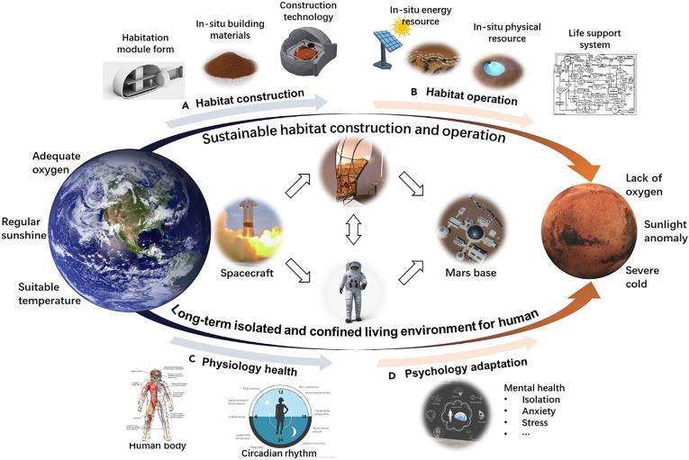

Phase I: Concept Study & Research Foundations

Phase II: Collaboration & Mission Simulation
The sequel to my NCAS experience certainly felt like a step-up to my initial research in Part I at NCAS. In this stage, special guest speakers were featured to discuss their profession, research, and background. The guest speakers not only provided valuable insight into their work but they also offered a critical networking opportunity for prospective engineers like myself. Throughout the scope of Phase II at NCAS, we also conducted a "gamified" mission of a spaceflight operation that simulated the Artemis program in teams. From my recollection, one takeaway was the difficulty following deadlines while simultaneously remaining within the budget allotted to my team. Nevertheless, we made some technological sacrifices but remained within budget and witnessed a successful mission within the given constraints.


Hard Skills
- Engineering Design Process
- Technical Research
- Mission Planning
- Design Trade-off Analysis
- Systems Engineering Fundamentals
Soft Skills
- Team Collaboration
- Leadership
- Communication
- Networking
- Time Management
Software & Tools
- Microsoft Word
- Microsoft Teams